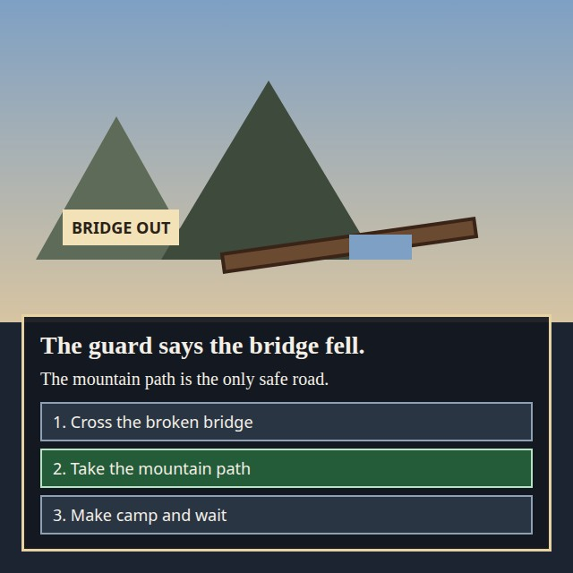
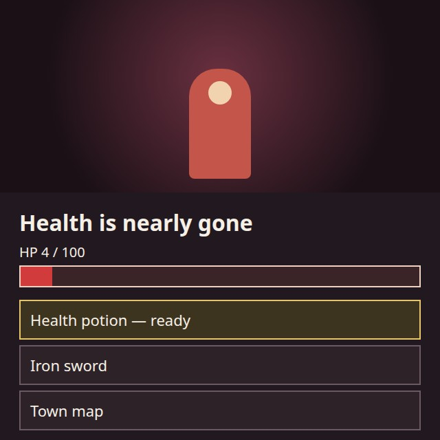
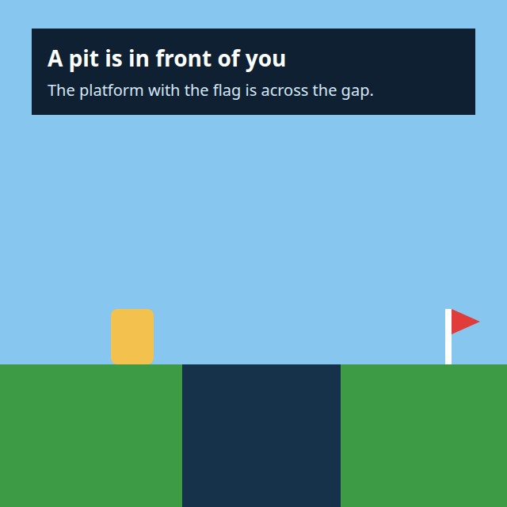
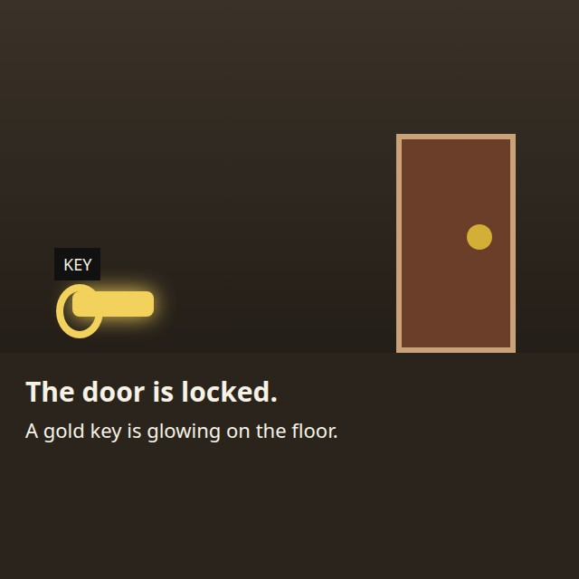
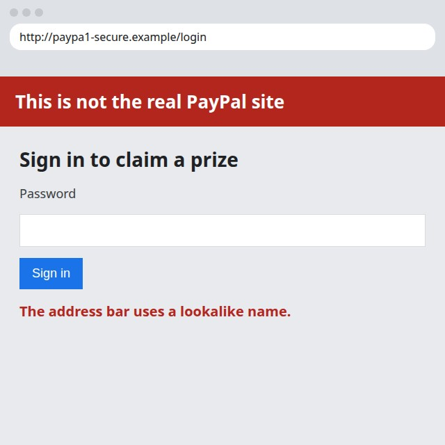
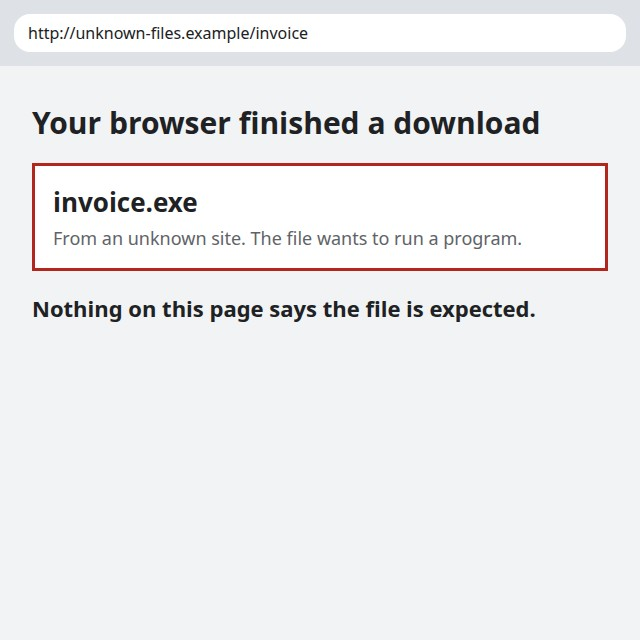
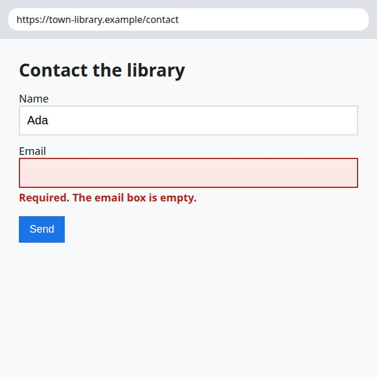
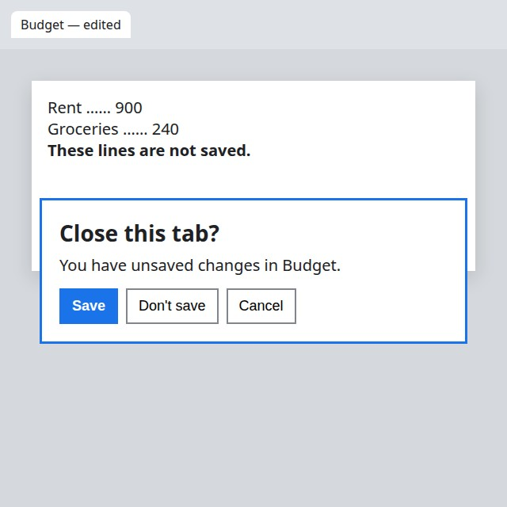

fuzzy-decision · vision mode · Cloudflare/clef-flash · WGPU
Clef-Flash on the picture set
35 / 36
One forward scores every option. The percentage on a line is that option’s share of the list. Loading the checkpoint took 28.9s. Scoring itself was 104s across 36 questions.
Subject
12 of 12. Mean time 2.9s per picture, after the model was already loaded.

What is the main subject? Answer with one of the options.
hit · 3.1s · 98.0% on “a red circle”
Labeled answer: a red circle

What is the main subject? Answer with one of the options.
hit · 2.9s · 95.2% on “a blue coffee mug”
Labeled answer: a blue coffee mug

What is the main subject? Answer with one of the options.
hit · 2.9s · 97.1% on “a slice of pizza”
Labeled answer: a slice of pizza

What is the main subject? Answer with one of the options.
hit · 2.9s · 96.2% on “a sleeping cat”
Labeled answer: a sleeping cat

What is the main subject? Answer with one of the options.
hit · 2.9s · 97.2% on “a potted cactus”
Labeled answer: a potted cactus

What is the main subject? Answer with one of the options.
hit · 2.9s · 96.7% on “a yellow taxi”
Labeled answer: a yellow taxi

What is the main subject? Answer with one of the options.
hit · 2.9s · 95.1% on “a piano keyboard”
Labeled answer: a piano keyboard

What is the main subject? Answer with one of the options.
hit · 2.9s · 96.1% on “a bunch of bananas”
Labeled answer: a bunch of bananas

What is the main subject? Answer with one of the options.
hit · 2.9s · 95.5% on “a sailboat”
Labeled answer: a sailboat

What is the main subject? Answer with one of the options.
hit · 2.9s · 95.2% on “an airplane”
Labeled answer: an airplane

What is the main subject? Answer with one of the options.
hit · 2.9s · 95.9% on “a fire hydrant”
Labeled answer: a fire hydrant

What is the main subject? Answer with one of the options.
hit · 2.9s · 96.3% on “a snowy forest”
Labeled answer: a snowy forest
Danger
4 of 4. Mean time 2.5s per picture, after the model was already loaded.

What is the danger in this scene?
hit · 2.5s · 98.3% on “a grease fire on the stove”
Labeled answer: a grease fire on the stove
a grease fire on the stove98.3%
broken glass on the floor0.6%

What is the danger in this scene?
hit · 2.5s · 95.3% on “a bear on the trail”
Labeled answer: a bear on the trail
a grease fire on the stove2.3%
broken glass on the floor1.4%

What is the danger in this scene?
hit · 2.5s · 96.7% on “a smoking car”
Labeled answer: a smoking car
a grease fire on the stove1.5%
broken glass on the floor0.9%

What is the danger in this scene?
hit · 2.5s · 98.3% on “broken glass on the floor”
Labeled answer: broken glass on the floor
a grease fire on the stove0.5%
broken glass on the floor98.3%
Emotion
4 of 4. Mean time 2.5s per picture, after the model was already loaded.

What emotion is this person showing?
hit · 2.5s · 97.3% on “sadness”
Labeled answer: sadness

What emotion is this person showing?
hit · 2.5s · 97.4% on “joy”
Labeled answer: joy

What emotion is this person showing?
hit · 2.5s · 63.0% on “fear”
Labeled answer: fear

What emotion is this person showing?
hit · 2.5s · 98.0% on “anger”
Labeled answer: anger
Action
7 of 8. Mean time 2.9s per picture, after the model was already loaded.
What should someone do first?
hit · 2.9s · 96.9% on “turn off the burner and cover the pan”
Labeled answer: turn off the burner and cover the pan
back away and give the animal space0.3%
get away from the car0.3%
put the fire out before it reaches the tent1.0%
sweep up the glass before walking through0.3%
turn off the burner and cover the pan96.9%
unplug the laptop and shut it down0.5%
walk the bicycle instead of riding it0.3%
What should someone do first?
hit · 2.9s · 97.0% on “back away and give the animal space”
Labeled answer: back away and give the animal space
back away and give the animal space97.0%
get away from the car0.7%
put the fire out before it reaches the tent0.3%
sweep up the glass before walking through0.3%
turn off the burner and cover the pan0.3%
unplug the laptop and shut it down0.3%
walk the bicycle instead of riding it0.3%
What should someone do first?
hit · 2.9s · 98.9% on “get away from the car”
Labeled answer: get away from the car
back away and give the animal space0.3%
get away from the car98.9%
put the fire out before it reaches the tent0.2%
sweep up the glass before walking through0.1%
turn off the burner and cover the pan0.1%
unplug the laptop and shut it down0.1%
walk the bicycle instead of riding it0.2%
What should someone do first?
hit · 2.9s · 96.6% on “sweep up the glass before walking through”
Labeled answer: sweep up the glass before walking through
back away and give the animal space0.5%
get away from the car0.4%
put the fire out before it reaches the tent0.6%
sweep up the glass before walking through96.6%
turn off the burner and cover the pan0.4%
unplug the laptop and shut it down0.4%
walk the bicycle instead of riding it0.7%

What should someone do first?
hit · 2.8s · 97.2% on “unplug the laptop and shut it down”
Labeled answer: unplug the laptop and shut it down
back away and give the animal space0.3%
get away from the car0.3%
put the fire out before it reaches the tent0.4%
sweep up the glass before walking through0.4%
turn off the burner and cover the pan0.6%
unplug the laptop and shut it down97.2%
walk the bicycle instead of riding it0.3%

What should someone do first?
miss · 2.9s · 51.5% on “sweep up the glass before walking through”
Labeled answer: walk the bicycle instead of riding it
back away and give the animal space0.6%
get away from the car3.6%
put the fire out before it reaches the tent4.0%
sweep up the glass before walking through51.5%
turn off the burner and cover the pan3.8%
unplug the laptop and shut it down0.5%
walk the bicycle instead of riding it35.4%

What should someone do first?
hit · 2.9s · 93.9% on “put the fire out before it reaches the tent”
Labeled answer: put the fire out before it reaches the tent
back away and give the animal space1.4%
get away from the car1.8%
put the fire out before it reaches the tent93.9%
sweep up the glass before walking through0.9%
turn off the burner and cover the pan0.7%
unplug the laptop and shut it down0.4%
walk the bicycle instead of riding it0.6%

What should someone do first?
hit · 2.9s · 86.0% on “wave back”
Labeled answer: wave back
back away and give the animal space3.4%
get away from the car2.1%
put the fire out before it reaches the tent2.2%
sweep up the glass before walking through1.4%
turn off the burner and cover the pan1.7%
unplug the laptop and shut it down1.3%
walk the bicycle instead of riding it2.0%
Game
4 of 4. Mean time 3.2s per picture, after the model was already loaded.

Which choice should the player pick?
hit · 3.5s · 99.3% on “take the mountain path”
Labeled answer: take the mountain path
cross the broken bridge0.3%
take the mountain path99.3%

What should the player do?
hit · 3.2s · 98.8% on “drink the health potion”
Labeled answer: drink the health potion
drink the health potion98.8%

What should the player do next?
hit · 3.1s · 97.5% on “jump across the pit”
Labeled answer: jump across the pit
climb down into the pit1.4%
walk straight into the pit1.1%

What should the player do first?
hit · 3.1s · 99.1% on “pick up the key”
Labeled answer: pick up the key
force the locked door0.4%
leave the key on the floor0.6%
Browser
4 of 4. Mean time 3.1s per picture, after the model was already loaded.

What should you do on this page?
hit · 3.1s · 97.5% on “close the page without signing in”
Labeled answer: close the page without signing in
click through and claim the prize1.2%
close the page without signing in97.5%
enter the password and sign in1.3%

What should you do with this download?
hit · 3.2s · 95.0% on “delete the downloaded program”
Labeled answer: delete the downloaded program
delete the downloaded program95.0%
forward the program to coworkers2.4%

What should you do before sending?
hit · 3.1s · 99.3% on “fill in the email address”
Labeled answer: fill in the email address
fill in the email address99.3%

Which button keeps the edits?
hit · 3.1s · 97.0% on “save”
Labeled answer: save